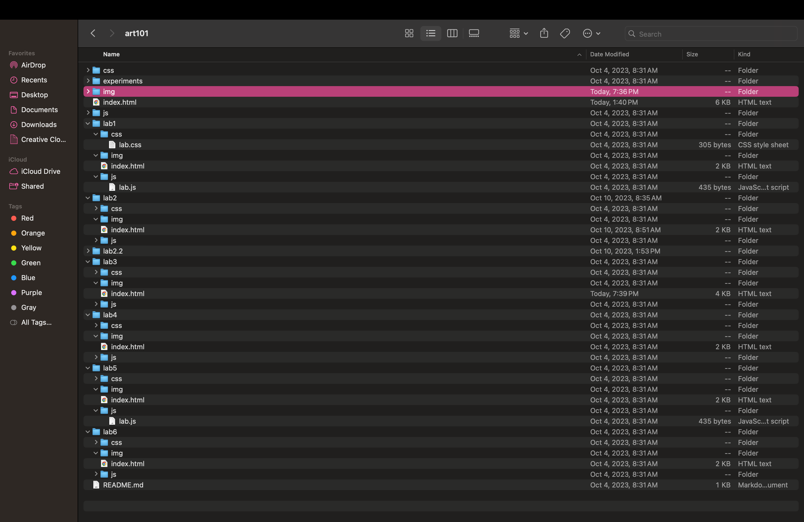
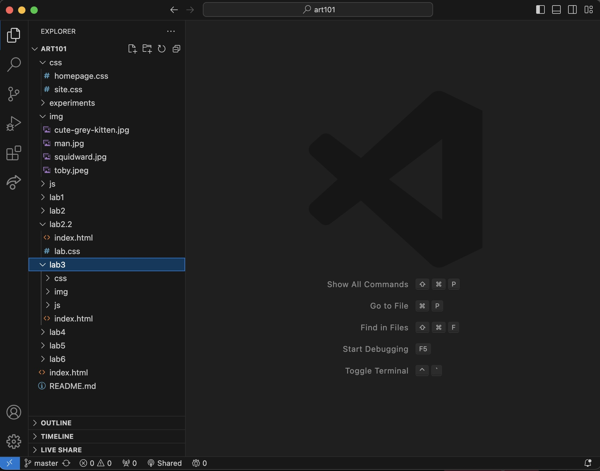
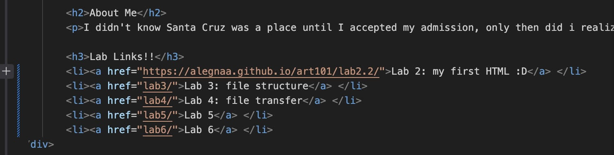
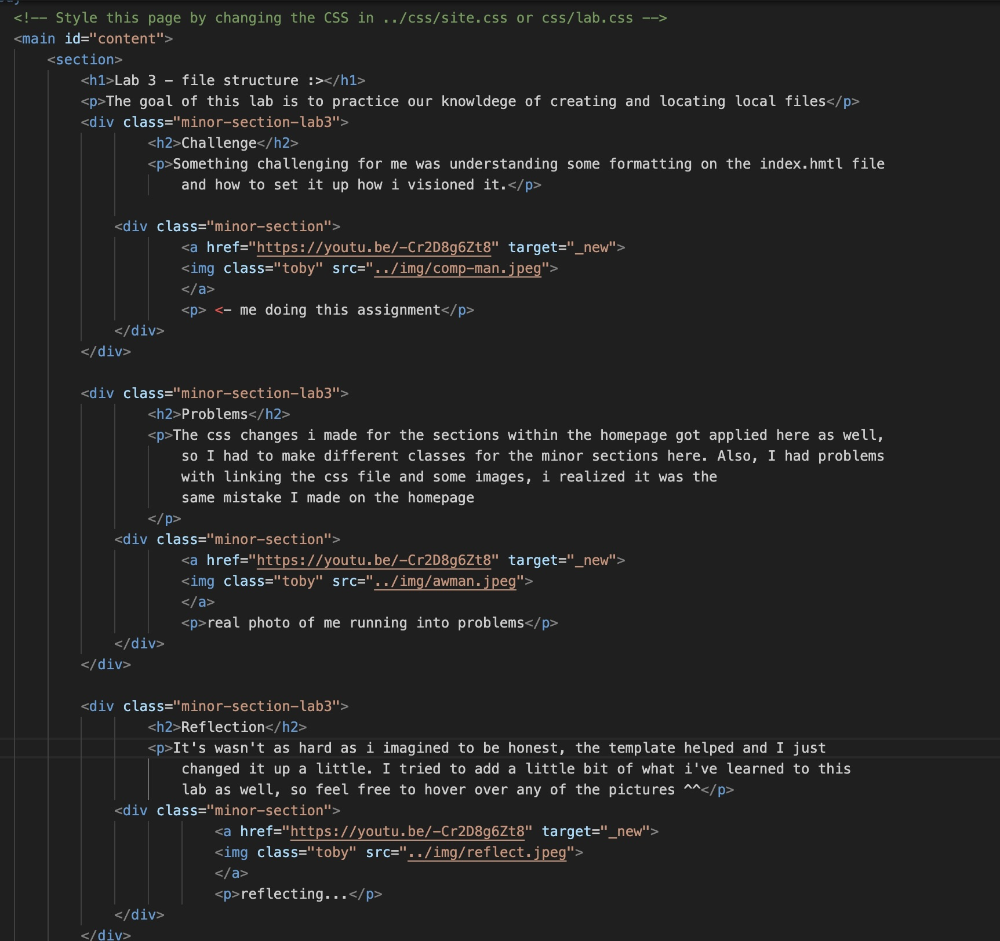

Lab 3 - file structure :>
The goal of this lab is to practice our knowldege of creating and locating local files
(click on the photos for a cool video :D)
Challenge
Something challenging for me was understanding some formatting on the index.hmtl file and how to set it up how i visioned it.
<- me doing this assignment
Problems
The css changes i made for the sections within the homepage got applied here as well, so I had to make different classes for the minor sections here. Also, I had problems with linking the css file and some images, i realized it was the same mistake I made on the homepage
Reflection
It's wasn't as hard as i imagined to be honest, the template helped and I just changed it up a little. I tried to add a little bit of what i've learned to this lab as well, so feel free to hover over any of the pictures ^^
Results
I changed the color of the sections, and also added some images :D
Screenshots!!
picture of my art101 folder, very organized, very clean (not for long)
here i linked all of the labs on my homepage. most of them don't work because I havent done them, but lab 2 is currently fully functional! (and now lab 3!!)
here's my very cool and organized code.